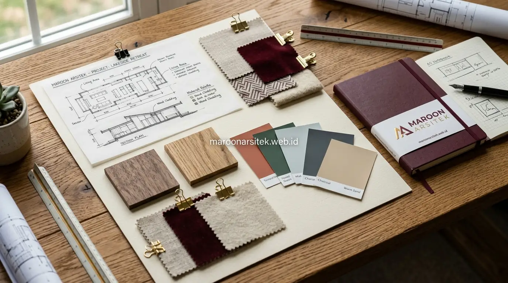

Banyak calon pemilik hunian merasa ragu saat ingin menggunakan jasa desain rumah karena khawatir ide atau konsep yang mereka bayangkan tidak dapat ditangkap dengan tepat oleh arsitek. Kekhawatiran ini sangat wajar, terutama bagi Anda yang baru pertama kali merencanakan pembangunan rumah tinggal. Namun, risiko miskomunikasi dapat dieliminasi secara total apabila alur perancangan dikelola melalui tahapan kerja yang terstruktur dan transparan. Menggunakan layanan jasa arsitek rumah dari Maroon Arsitek memastikan setiap meter persegi lahan dimanfaatkan secara optimal, estetis, dan ramah anggaran.
Konsultasi Awal Jasa Desain Rumah untuk Menyelaraskan Visi Klien dan Arsitek
Konsultasi awal berfungsi menyamakan persepsi antara kebutuhan fungsional keluarga dan gagasan desain yang diusulkan oleh tim arsitek:
- Penggalian Kebiasaan & Gaya Hidup: Membahas jumlah penghuni, rutinitas kerja dari rumah (*work from home*), kebutuhan ruang bersama, hingga hobi khusus yang memerlukan penataan ruang tertentu.
- Analisis Potensi Lahan: Memeriksa ukuran kavling, posisi sudut (*hook*), arah hadap matahari untuk pencahayaan alami, serta arah hembusan angin untuk sirkulasi silang (*cross ventilation*).
- Penetapan Plafon Anggaran Indikatif: Membicarakan target estimasi biaya bangun sejak awal agar arsitek memilihkan material dan struktur yang realistis untuk diwujudkan di lapangan.
Tahapan Kerja Jasa Desain Rumah dari Brief hingga Gambar Kerja
Proses perancangan arsitektur berjalan secara bertahap dan sistematis melalui milestone yang terukur:
- Penyusunan Skematik Denah (Layout Plan): Menyajikan 2–3 alternatif tata letak ruang untuk dibandingkan alur sirkulasi dan efisiensinya sebelum menentukan denah final.
- Pengembangan Desain 3D Fotorealistis: Menampilkan bentuk fasad luar, pemilihan material dinding, warna cat, dan pencahayaan eksterior dari berbagai sudut pandang nyata.
- Penyusunan Detail Engineering Design (DED): Menggambar dokumen kerja teknis arsitektur, struktur beton bertulang, dan instalasi mekanikal elektrikal pipa (MEP) secara presisi.

Komunikasi Konsep Desain Rumah melalui Moodboard dan Referensi Visual
Menerjemahkan ide abstrak menjadi visual nyata dilakukan menggunakan *moodboard* tematik yang interaktif:
- Palet Warna & Karakter Ruang: Menyandingkan kombinasi warna hangat (*warm white*, abu-abu lembut, aksen kayu) agar klien dapat merasakan atmosfer ruangan sebelum dibangun.
- Katalog Material Finis: Menunjukkan contoh tekstur batu alam, jenis keramik lantai, hingga jenis kisi-kisi aluminium yang akan diaplikasikan pada fasad rumah.
- Efisiensi Diskusi: Referensi visual konkret memotong perdebatan panjang dan mempercepat kesepakatan desain antara suami, istri, dan arsitek.
Revisi Desain Rumah Bertahap untuk Hasil yang Sesuai Kebutuhan
Sesi revisi bukan merupakan hambatan, melainkan jembatan penyempurnaan detail agar hunian benar-benar nyaman ditinggali:
- Revisi difokuskan per tahapan: menuntaskan denah tata letak terlebih dahulu sebelum beralih ke revisi fasad 3D.
- Setiap masukan dicatat dalam lembar berita acara revisi untuk menjaga linimasa pengerjaan tetap sesuai kesepakatan kontrak.
- Arsitek memberikan pertimbangan teknis terhadap setiap permintaan revisi, memastikan perubahan tidak merusak kekuatan struktur atau melanggar garis sempadan bangunan (GSB).
Dokumentasi dan Serah Terima Desain Rumah Siap Bangun
Paket akhir yang diserahkan kepada klien merupakan bundel lengkap yang siap digunakan untuk berbagai keperluan:
- Buku Gambar Kerja Cetak (A3) & File PDF/CAD: Berisi ratusan lembar detail teknis yang menjadi panduan mandor dan kontraktor pelaksana.
- Rencana Anggaran Biaya (RAB): Rincian volume dan harga satuan material untuk acuan lelang tender kontraktor atau estimasi belanja mandiri.
- Dokumen Gambar PBG: Memenuhi standar persyaratan administratif untuk pengurusan Izin Persetujuan Bangunan Gedung di dinas perizinan setempat.